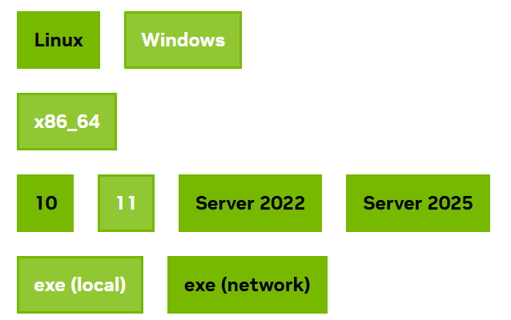
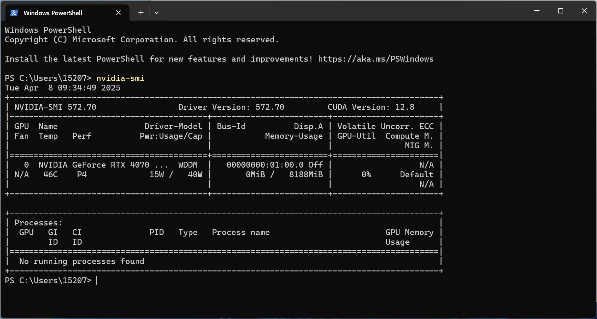
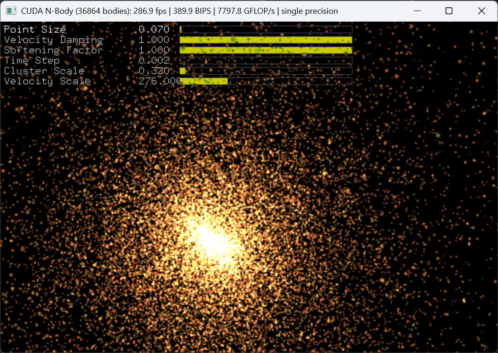

1.1 程序安装
安装 CUDA 以及 PyTorch 相关库!
创建日期: 2025-03-08
主要包括 CUDA 和 PyTorch 相关库的安装以及验证。对于新手来说，可以先跳过 GPU 安装部分，用 PyTorch 的 CPU 版本进行学习（后续需要再安装 GPU ）。安装指令如下：
pip3 install torch torchvision torchaudio
1.1.1 CUDA 安装
NVIDIA® CUDA® 工具包 提供了一个用于创建高性能 GPU 加速应用的开发环境。借助它，我们可以加速在嵌入式系统、桌面工作站、企业数据中心、基于云的平台和超级计算机上开发、优化和部署应用程序。该工具包包括 GPU 加速库、调试和优化工具、C/C++ 编译器和运行时库。
英伟达 CUDA 下载地址：https://developer.nvidia.com/cuda-downloads
CUDA 下载页面提供诸多选项，如下所示：

Windows 用户按照流程操作完成之后，在终端输入 nvidia-smi 指令：

显示 CUDA 为 12.8 版本，内存大约为 8 GB 。也可以输入 nvcc --version 查看编译工具的情况：
nvcc: NVIDIA (R) Cuda compiler driver Copyright (c) 2005-2025 NVIDIA Corporation Built on Fri_Feb_21_20:42:46_Pacific_Standard_Time_2025 Cuda compilation tools, release 12.8, V12.8.93 Build cuda_12.8.r12.8/compiler.35583870_0
1.1.2 nbody 运行
在 CUDA 的 快速预览 中会运行一个 nbody 程序，如下所示：

注：N-body 问题描述的是在一个系统中有 N 个粒子相互作用，并且在一定时间内计算这些粒子的运动。每个粒子之间的相互引力会影响其他粒子的运动轨迹，通常通过牛顿引力定律来描述。
主要操作步骤如下：
下载 cuda-samples 源代码，进入 Samples/5_Domain_Specific/nbody/ 目录；
Windows 用户需要 freeglut.dll 和 glew64.dll 两个库，freeglut.dll 需要下载源码，使用 Visual Studio 进行编译；
使用代码编辑器打开 nbody 工程，点击运行。
终端输出提示：
> Windowed mode > Simulation data stored in video memory > Single precision floating point simulation > 1 Devices used for simulation GPU Device 0: "Ada" with compute capability 8.9 > Compute 8.9 CUDA device: [NVIDIA GeForce RTX 4070 Laptop GPU]
1.1.3 安装 PyTorch
进入 官方页面 ，安装带有 CUDA 版本的 torch 程序：
pip3 install torch torchvision torchaudio --index-url https://download.pytorch.org/whl/cu126执行完成之后，可以进入 Python 解释器，输入：
import torch
print(torch.__version__)本教程当前使用的版本是 2.6.0+cu124 ，版本有点出入不影响学习。
1.1.4 确认
为了确保 PyTorch 已正确安装，我们可以通过代码来验证安装。文件 install_verify.py 构建一个随机初始化的张量：
import torch
x = torch.rand(5, 3)
print(x)输出类似于以下内容：
tensor([[0.6853, 0.2405, 0.5365],
[0.8243, 0.7536, 0.9059],
[0.2503, 0.2276, 0.4458],
[0.4820, 0.8708, 0.9114],
[0.7133, 0.1347, 0.5230]])
此外，需要检查 GPU 驱动程序和 CUDA 是否已启用并可供 PyTorch 访问，运行以下命令来返回 CUDA 驱动程序是否已启用：
print(torch.cuda.is_available())